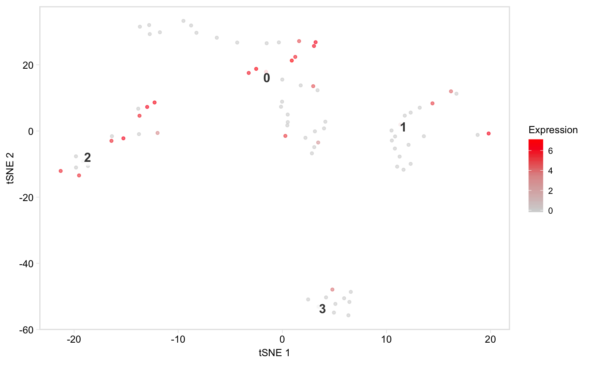
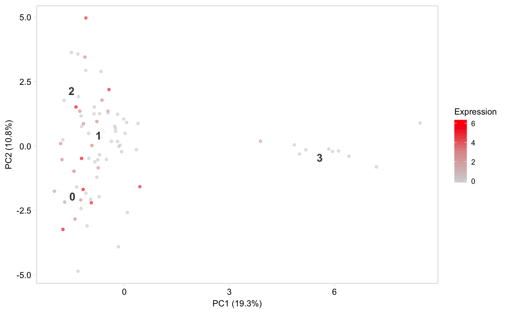
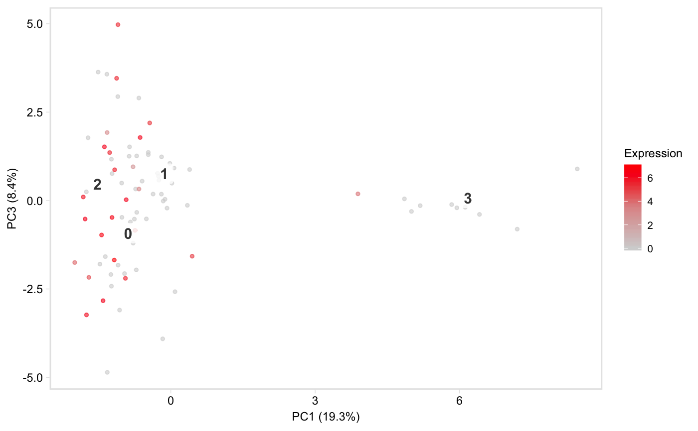

R/feature_plots.R
tsneByMeanMarkerExpression.RdPlot a low-dimensional embedding of the cells,
coloured by expression of a gene, or mean expression of a group of marker
genes. Defaults to t-SNE space, but see the reduction argument for
how to plot in PCA space instead. This function is based on Seurat::FeaturePlot.
tsneByMeanMarkerExpression(seurat, genes, reduction = "tsne", label = TRUE, palette = "redgrey", title = NULL, alpha = 0.6, label_repel = TRUE, label_size = 4, legend = TRUE, hide_ticks = FALSE, hide_axes = FALSE, limits = NULL, label_short = FALSE, dim1 = 1, dim2 = 2, return_df = FALSE, point_size = 1) feature(seurat, genes, per_gene = TRUE, statistic = "mean", label = TRUE, palette = "redgrey", label_repel = FALSE, label_size = 4, label_short = FALSE, legend = FALSE, title = NULL, reduction = "tsne", limits = c(NA, NA), dim1 = 1, dim2 = 2, alpha = ifelse(statistic == "percentiles", FALSE, 0.6), point_size = 0.5, ncol = ifelse(length(genes) == 1, 1, ifelse(length(genes) %in% c(2, 4), 2, 3)), hide_ticks = TRUE, hide_axes = TRUE)
| seurat | Seurat object, where dimensionality reduction has been applied, i.e. (after applying Seurat::RunPCA() or Seurat::RunTSNE() to the object) |
|---|---|
| genes | String or character vector specifying gene(s) to use |
| reduction | String specifying the dimensionality reduction to use, retrieves t-SNE by default. This should match the names of the elements of the list seurat@dr, so it will typically be one of "pca" or "tsne". Default: "tsne" |
| label | Logical, whether to label clusters on the plot. Default: TRUE. |
| palette | String or character vector. If a string, one of "viridis", "blues", or "redgrey", specifying which gradient palette to use. Otherwise, a character vector of colours (from low to high) to interpolate to create the scael. Default: redgrey. |
| title | (Optional) String specifying the plot title |
| alpha | Numeric, fixed alpha for points. Default: 0.6 |
| label_repel | Logical, if |
| label_size | Numeric, controls the size of text labels. Default: 4. |
| legend | Logical, whether or not to plot legend. Default: TRUE |
| hide_ticks | Logical, whether to hide axis ticks. Default: FALSE |
| hide_axes | Logical, whether to hide axis labels. Default: TRUE |
| limits | (Optional) A numeric vector of length two providing the limits to
use for the colour scale (documentation
from |
| label_short | (Optional/Experimental!!) Logical, if TRUE, assumes clusters
(at seurat@ident) consist of a prefix and a suffix separated by a non-alpha
numeric character ( |
| dim1 | Numeric, index of dimension from |
| dim2 | Numeric, like |
| point_size | Numeric, size of points in scatterplot. Default: 1. (A smaller value around 0.5 is better for plots which will be viewed at small scale.) |
A ggplot object
feature: Shortcut function for plotting mean expression
tsneByMeanMarkerExpression(pbmc, "IL32")tsneByMeanMarkerExpression(pbmc, "IL32", reduction = "pca", dim1 = 1, dim2 = 3)